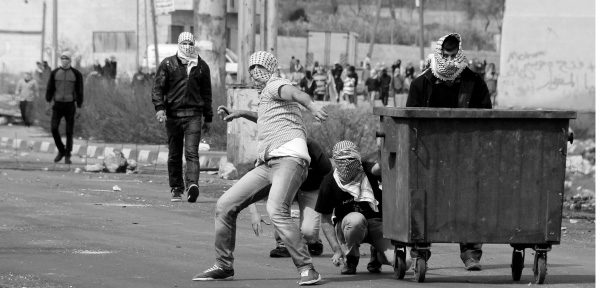

The Third Intifada Has Already Begun
Arabs understand nothing short of real strength. They never heard of restraint as a form of strength. In their eyes, restraint is an expression of weakness that invites terror, time and time again.
Translated by Michoel Leib Dobry

Hundreds of terrorists who were released in the Gilad Shalit prisoner swap are now fomenting violence all over Yehuda and Shomron. These are the ones standing behind the growing wave of terrorism on highways throughout the region which threaten the lives of innocent Jewish residents. These acts of incitement also served as a background to the murder of Aviatar Borovsky, may G-d avenge his blood, a married father of five, killed last month at Tapuach Junction in the Shomron. The murderer didn’t just get his idea to kill out of nowhere. It is a direct result of the rising level of terrorism – and of course, the silence of the Israel Defense Forces.
In practical terms, we are now several months into a most dangerous period for the residents of Yehuda and Shomron. We can safely say that the third intifada has not only begun in earnest, it is at its highpoint. The rocks that struck the head of two-year old Adele Bitton, may G-d give her a complete and speedy recovery, represent merely one incident in the wave of terrorism experienced daily on roads in Yesha. Yet, such occurrences receive virtually no coverage in the national or world media.
On the one hand, these are acts of violence of the highest order. The throwing of rocks and cinder blocks on cars racing along the highway is terrorism in every sense of the word. However, the same state-run media that defines any graffiti sprayed on a car in an Arab village as terrorism categorically refuses to show any indignation towards the real terrorism rampaging just fifteen minutes away from the outskirts of Tel Aviv. Rocks thrown, Molotov cocktails exploding, whole families attacked by Arab rioters, and yet the media ignores all such reports. As long as there are (thank G-d) no casualties, they remain quiet.
On the other hand, even the settlers prefer not to fan the flames of national outrage at this time. They remember quite well how people viewed the Shomron during the fiery days of the last Arab uprising, when reports on terrorism along the highways were publicized daily, frightening Israelis into avoiding the region. As a result, the Shomron was labeled with a negative stereotype, causing many Jews to keep their distance. Therefore, the settlers now understand that headlines on rock throwing along the settlement roads will merely be detrimental to their cause. In recent years millions of shekels have been invested into altering the Shomron’s image. The “Shomron – Nice to Know” projects, bringing tens of thousands of visitors to the region, have succeeded in changing the public’s perception and have given the Shomron an aura of peaceful development and openness. The last thing these regional leaders need right now is a media blitz designed to brand the Shomron as an Israeli version of the Wild West.
Hundreds of thousands of Jews live in this delicate tinderbox of a reality. They are the ones who travel along these highways each day, dealing with the growing terrorist menace. From their vantage point, every incident of violence should be reported to the proper authorities. However, they won’t make demonstrations in front of the prime minister’s office because the Shomron regional council and other settlement leaders strategically choose to conceal what’s really going on in order not to spoil their new image.
The harsh reality is that new terror cells continue to sprout. These are not just random rock throwers; these are hardened Islamic extremists who have never abandoned the tools of war. They spent a few years in Israeli jails for murdering innocent Jews, enjoying comfortable accommodations, as they studied for their college degrees at the expense of the Palestinian Authority. Now that their vacation is over they are eager to resume their terrorist activities with even greater enthusiasm than before. Why greater? Because they see that the government of Israel will always find some convenient excuse to release them.
The simple thing to do would have been to pass legislation mandating capital punishment for any violent death caused in a terrorist attack against the Jewish residents of Eretz Yisroel, e.g., those who slaughtered the Fogel family Hy”d in Itamar two years ago. They shouldn’t even be alive now, and surely not with the adequate conditions of Israeli jails, together with their fellow perpetrators of other terrorist attacks against Jews.
A TRADITION OF WARFARE
The settlement leaders place their trust in the Israel Defense Forces, waiting for their commanders in the field to come to their senses and put an end to this deteriorating security situation. However, the IDF doesn’t wake up. Someone is sleeping on guard duty.
The person primarily responsible for this chaos is IDF Central Command chief Gen. Nitzan Alon. He is a very controversial military commander, known for his hostility towards the settler population. Just last year he was appointed to his current position by the previous minister of defense, Ehud Barak, who decided that he would show the settlers who’s boss. This highly-charged political decision is costing us dearly today.
Instead of toughening up the guidelines, defining rock throwing as an act of terror no less than shooting at a car, Nitzan Alon shows restraint. Such restraint brought us the second intifada during the premiership of Ariel Sharon, who made the distorted comparison that restraint is strength. Then as today, the Arabs understand nothing short of real strength. They never heard of restraint as a form of strength. In their eyes, restraint is still an expression of terrible weakness that invites terror, time and time again.
On countless occasions the Rebbe cited Shulchan Aruch, Sec. 329, regarding the halachic obligation to take forceful action against terrorists without compromise or capitulation. Today things appear clearer than ever before. In one corner there are the supporters of further withdrawals, refusing to abandon the creed of the New Middle East, despite the fact that it has repeatedly blown up in their faces. On the opposing side we have the clear-thinking defense experts who understand the reality better than anyone. When we see the situation with our own eyes, there’s only one way to read the map: “Gentiles who besiege Jewish cities… go out against them armed with weapons of war.” There can be no containment or compromise of any kind, as this would allow the level of terrorism to increase manifold, endangering the lives of hundreds of thousands of people.
NO CROSSING THE LINE
In the meantime, the Shomron regional council has initiated a new campaign against companies unwilling to provide services beyond the Green Line. It seems that many businesses in the Israeli economy have adopted this approach. They relate to all communities in Yehuda and Shomron as outside the boundaries of Eretz Yisroel. Therefore, they feel no obligation to serve them.
The residents of Yehuda and Shomron are quite familiar with this phenomenon. After buying a certain product from a company via one of its store branches or the Internet, they discover that the company provides excellent customer and delivery services – but not beyond the Green Line. At this point, matters become rather complex. The company requests an alternative address, an alternative delivery service imposing additional charges, or some other insincere solutions that turn the settlers into second-rate customers.
Some time ago the Shomron regional council decided to put an end to the discrimination against its population. They recently took a number of steps to deal with those who treated Yehuda and Shomron like penal colonies. For example, they just filed several lawsuits against journalists who attacked the local settlers in the press. Each of these journalists was given the opportunity to apologize over the airwaves to the offended people of Yehuda and Shomron. If they didn’t choose this option, they would be compelled to face a libel suit in open court. Most of them agreed to issue a public apology, while a few stubborn souls were dragged before a judge, forced for the first time in their journalistic careers to deal with settlers unwilling to accept second—rate status any longer. They are citizens of the Land of Israel, equal to all others, and they would not tolerate further harm to their reputation.
Similar measures were taken against companies that refused to cross the Green Line. As part of their campaign to offset this tactic, a special complaint center was established to coordinate all claims against such companies. Any local resident who encountered a company that refused to give him services was asked to report the incident to the center, which would then confront the various companies with the complaints. The companies would be given the option of correcting the matter by starting to cross the Elkana checkpoint and provide services to another satisfied customer. If they refused this option, they would be left with no choice except to face litigation, as Israeli law forbids discrimination in providing services to customers.
Sholom Ber Crombie. "The Third Intifada Has Already Begun." Beis Moshiach, no. 883 (June 13, 2013).